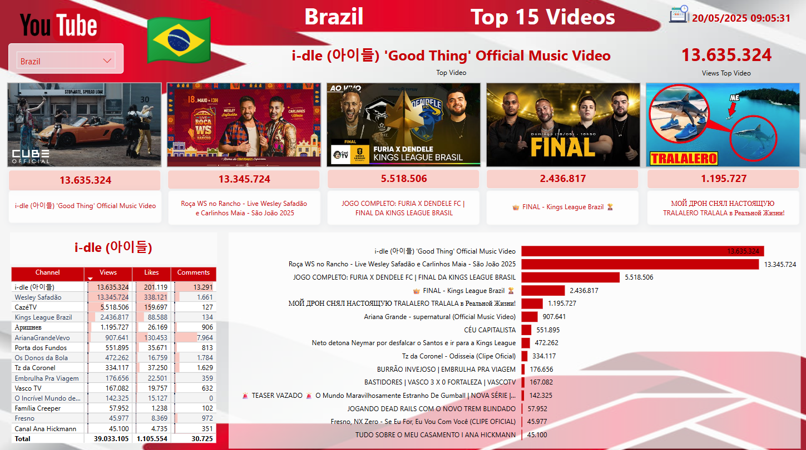
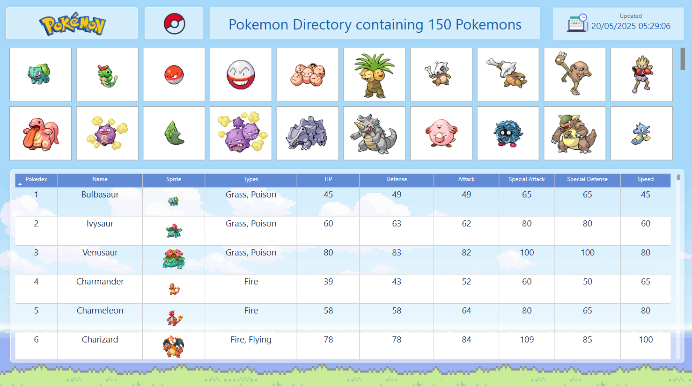

Welcome! Showcasing my data visualization and API integration projects.
This dashboard consolidates and visualizes trending data from multiple social media platforms including YouTube, Reddit, Twitch, Spotify, and TMDB. It utilizes Python scripts to fetch data via APIs and Power BI for interactive reporting, providing insights into current online trends.
 View Social DashboardAn interactive Pokémon directory displaying sprites, types, and base statistics for the first 150 Pokémon. Data is fetched live from the PokéAPI using Python and visualized in Power BI, offering a quick reference for Pokémon enthusiasts.
 View Pokémon Directory